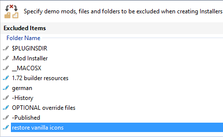
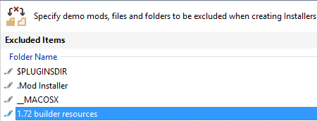
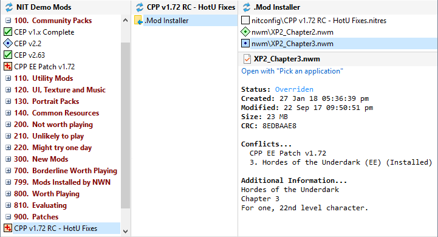

Do not use the installer version of CPP with NIT, because an incorrect Mod Installer is generated when you use CPP's executable file.
If you want to use NWNX, ensure the DLL extension is included in your Map Extensions page. If you don't want to use it, remove the DLL extension or delete the DLL files from the Mod Installer.

The restore vanilla icons entry in the Map Exclusions page in Advanced Settings controls whether CPP's Vanilla Icons option is included or excluded from the Mod Installer.

Remove restore vanilla icons to use CPP's Vanilla Icons.
Include restore vanilla icons to use CPP's standard icons.
The 1.72 builder resources entry in the Map Exclusions page controls whether CPP's Builder Resources are included or excluded from the Mod Installer.

Remove 1.72 builder resources to include CPP's Builder Resources in the Mod Installer.
Include 1.72 builder resources to exclude CPP's Builder Resources from the Mod Installer.
Ideally, CPP should be placed before most other Mods in the Mod list (ie low priority) so that other Mods take precedence. However, this means that CPP's campaign modules are overwritten by the Installer's generated original Mods.
You can resolve this issue by creating a Mod containing CPP's campaign files and placing it lower down in the Mod list (ie higher priority) so that CPP's campaign patches are not overwritten.

See Create NIT Mods from Restorers for information on how to use files from other Installers or Restorers to create a new Mod.
Community Expansion Pack (CEP)
Neverwinter Nights Client Extender (NWNCX)
Community Patch Project (CPP)